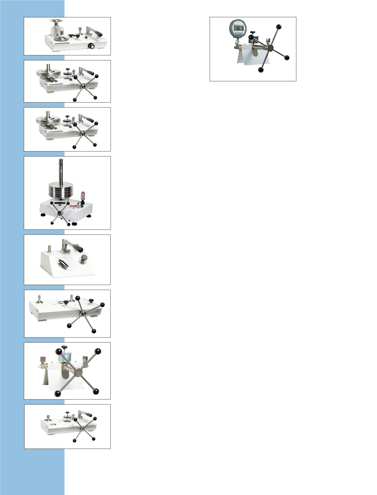

ADCS-601
7750i
RPM4-AD
2468A
7250sys
Luftdaten-
Kalibrierung
Luftdatenkalibrator 7750i
Luftdatentestsatz mit einzigartiger
Präzision und Langzeitstabilität
sowie überlegener
Druckregelungstechnologie.
•
Hohe Genauigkeit,
RVSM-konform
•
Genauigkeit bis ± 2 Fuß,
0,02 Knoten
•
Echter Differenzdrucksensor für
Luftgeschwindigkeit (Qc)
Referenzdruckmonitor
RPM4-AD
Spezialisierte Druckanzeige
deckt die Absolut- und
Differenzialdruckbereiche der
typischen Luftdateninstrumente ab.
•
Ausführungen für Starr- und
Drehflügler
•
Echter Pt-, Ps-, Qc-Betrieb
Pitot- bzw. statisches
Primärnormal 2468A
Für Luftdatenabsolut- und
-differenzialdruckbereiche
spezialisiertes
Gaskolbenmanometer.
•
Druckbereich: 0,4 inHg bis
103 inHg.
•
Optionaler Bereich: 3,4 inHG bis
400 inHg
•
Genauigkeit bis ± 0,5 Fuß,
0,003 Knoten
•
Erweiterter Gewichtssatz deckt
den gesamten Luftdatenbereich
ab, ohne dass Kolben gewechselt
werden müssen
•
Kompatibel mit dem Autofloat-
Regler und WinPrompt sowie
COMPASS-Software
Luftdaten-Kalibriersystem
ADCS-601
Gasdruckkalibrier-Tischsystem
für die Absolut- und
Differenzialmessung im
Luftdatenbereich.
•
Primäre Druckkalibrierung des
gesamten Luftdatenbereichs
•
Vollautomatischer Betrieb,
einschließlich Testausführung,
Druckregelung und
Datenerfassung von Prüflingen
Druckkalibrier-
systeme
Mehrbereichs-
Druckkalibriersystem
7250Sys
Schlüsselfertiges
Gasdruckkalibriersystem.
•
Gasdruckmessung und
-regelung von niedrigem
Absolutdruck bis 17 MPa
(2.500 psi)
•
Vollintegrierte Multibereich-
Test- und -Kalibriersysteme mit
einer einzigen Schnittstelle und
einem einzigen Testanschluss
zum Anschließen des Prüflings
•
Wahl eines 8-Bereich- oder
12-Bereich-Systems für
maximale Leistung und
Abdeckung
Kundenspezifische
Druckkalibriersysteme
In kundenspezifisch gefertigten
Systemen werden serienmäßig
Fluke Calibration Produkte auf
der Grundlage der Anforderungen
der Benutzer integriert. Es
handelt sich dabei oftmals
um Mehrbereichsysteme,
die Druckerzeugung
und Lieferzubehör,
Datenerfassungshardware
und -software, und/
oder Testinstrumenten-
Anschlussverteiler enthalten.
Kundenspezifisch gefertigte
Systeme enthalten
schlüsselfertige Druckkalibrier-
Einschubsysteme, tragbare
Kalibrierwagen und automatisierte
Druckkalibrier-Tischsysteme.
36
Druckkalibrierung